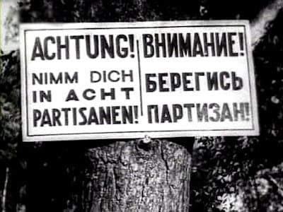
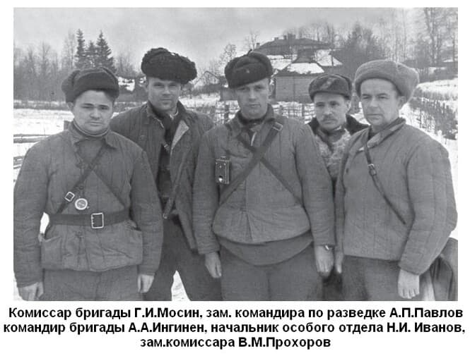

По поводу партизан
написано много и ничего.
Масса вопросов, а задать некому.
Литература на эту тему убогая и вертлявая. Полагаю, умышленно.
Мне рассказывали про наивных чудаков, которые разводили в лесу делянку с коноплей и никому о ней не рассказывали, полагая, если держать язык за зубами, проследить за таким полеводом невозможно. Так и есть, с земли затруднительно. Зато легко с самолета, с которого хорошо видна тропинка от делянки до дома. Это летом. Что говорить про зиму.
Еще. Рассказывал местный житель, как выглядит охота на лося в наше время.
Егерь видит следы лося на снегу. Это означает, что на этом конкретном участке лось есть и никуда он не денется, на нем и останется. Либо обнаружится его переход на другой участок. Дело в том, что леса наши состоят из отдельных массивов и если лось в нем, то в другой он не перелетит.
Охоты готовятся под какого-нибудь начальника. А начальники мерзнуть в лесу не любят. Без трофеев возвращаться тоже.
Съезжаются охотники, окружают этот массив и смыкают кольцо.
Стопроцентный результат. Лось на снегу в крови.
Это с лосем. А с людским обозом? С детьми и женщинами?
Все это к тому, что скопление людей в лесу незамеченным быть не может. А если они согреваются, ведут хозяйство, издают звуки и т.п, не знать об этом "каждой собаке", невероятно.
Что они ели? Если не снабжались централизованно, то взять им провизию, кроме как у своих соотечественников, местных жителей, было неоткуда. Если снабжались централизованно, совсем смешно говорить о скрытности. Только как их снабжали в условиях окружения?!
Откуда оружие? У немцев отбирали? То есть немцы были робкими телятами?
Для ведения боевых действий надо было не только оружие. Требовались грузовики боеприпасов, смазочные материалы, госпитали, медикаменты, зимняя одежда.
Конечно, есть огромные лесные массивы, куда немцам добраться затруднительно. Но и партизанам от туда не выбраться. А если там лагерь, что мешало его просто разбомбить одним самолетом? Или у партизан и зенитные орудия были?
Постоянно перемещались? И всю провизию, скарб, оружие, боеприпасы на себе таскали? Это когда снег по пояс? Лось может. А человек? Кто-нибудь пробовал пройти по лесу, без охотничьих лыж, хотя бы сто метров?
Командир 12-ой партизанской бригады А.А. Ингинен пишет:
"В суровые дни 1941 - 1942 годов было тяжело, очень тяжело. В непрерывных боях таяли наши ряды, кончились боеприпасы, иссякли запасы продовольствия. Жили мы в лесах, передвигаясь с места на место. В прифронтовом районе не было населенного пункта, где бы не находились или немецкие части, или части полевой жандармерии, или карательные отряды.
Даже в те трагические дни мы верили в нашу победу и ковали ее. Население таких деревень, как Лемовжа, Хотнежа, Клескуши, Веденское, Ухора, Сумск, и других помогало нам, чем могло.
Уже в середине 1943 года Волосовский отряд вырос до 300 человек, а осенью 1943 года из партизан Волосовского, Кингисеппского, Осьминского районов была сформирована 12-я Приморская партизанская бригада, в которой насчитывалось 1200 человек. Наши силы выросли до такой степени, что мы заняли по реке Луге десятки населенных пунктов, а затем вместе с 9-й и 6-й бригадами освободили от фашистов более 400 населенных пунктов Осьминского, Лядского, Сланцевского районов и восстановили в них Советскую власть".
А.А.Ингинен посещал после войны моего родственника в нашем доме, они были хорошими знакомыми. Я был ребенком, но лицо Александра Адольфовича помню. Конечно, не помню разговоров, но ощущение симпатии к этому человеку сохранилось. От него исходило спокойствие и уравновешенность. Даже тогда обратил, он не вступал в разговор встречно, перебивая собеседника. По моим детским ощущениям, он заполнял пространство покоем и я мог заниматься своими делами, не оглядываясь на постороннего незнакомого. Помню его таким.
Как все написанное при советской власти, текст его воспоминаний идеологически выдержан, уклончив и малоинформативен. Большие сомнения, что настоящий его автор Ингинен.
Если отряд существовал уже в 41-ом, при этом имел боеприпасы и запасы продовольствия, надо ли понимать, что он имел государственную поддержку? Или надо думать, что партизанское движение формировалось добровольно из числа местных жителей? Своего рода «дубина народной войны» ?
8 сентября началась блокада Ленинграда. Отряд вступил в действие до или после этой даты?
Сегодня на территории Волосовского района порядка 200 населенных пунктов. Партизаны восстановили советскую власть в четырехстах, судя по тексту. Т.е. освободили два района, и это никак не отразила советская пропаганда?
В книге «Блокада Ленинграда: 900 героических дней: 1941-1944: исторический дневник…» есть лишь одно упоминание о Волосовских партизанах от 9 ноября 1943 года.
«Партизанский отряд под командованием А.А.Ингинен, действовавший в Волосовском районе Лениградской области разгромил отряд немецких факельщиков, сжигавших населенные пункты. Партизаны убили и ранили более 50 поджигателей.»
Кто такие «факельщики» ? 50 немецких солдат ходили группой с факелами? Или отдельные солдаты шли с факелами в составе группы?
Не встречал документов, содержащих приказы германского командования сжигать дома мирных жителей. А с советской такой был. Это приказ Ставки ВГК от 17 ноября 1941 года № 428.
"Разрушать и сжигать дотла все населенные пункты в тылу немецких войск на расстоянии 40 - 60 км в глубину от переднего края и на 20 - 30 км вправо и влево от дорог".
Не сомневаюсь, он выполнялся, обрекая на мучительную смерть граждан своей страны, детей в первую очередь.
В районе сохраняют память о трагедии жителей сожженной деревни Большое Заречье в виде мемориала на месте ее былого нахождения. Страшно представить, какой ужас пришлось перенести этим людям. Кто виноват? Война. Кто виноват в войне, решайте сами.
В течение войны немцев в деревнях практически не было. Если были, то единичные. И не солдаты регулярной армии, а задний дивизион, не "вояки". Об этом рассказывают очевидцы. Держать гарнизон в каждой деревне германская армия не могла. Для того бы потребовалась "орда".
С позиции доступности для партизан, населенные пункты были оголены: 1200 вооруженных молодых людей против, либо единичных, переодетых в форму, австрийских крестьян, либо вообще ни кого.
Нет ни каких свидетельств о боестолкновениях регулярной немецкой армии с партизанами. Ни крупных, ни мелких. Если бы такое было, советские историки и пропаганда не упустили отобразить.
Оценочное мнение. Если бы партизаны добросовестно выполняли требования приказа № 428, Ленинградская область стала бы выжженной землей. Все населенные пункты были бы уничтожены "дотла", как того требовал приказ Ставки Верховного Главнокомандования. Препятствий не было.
Вот, и поди разберись, чем руководствовались партизаны? Приказами или человечностью?
